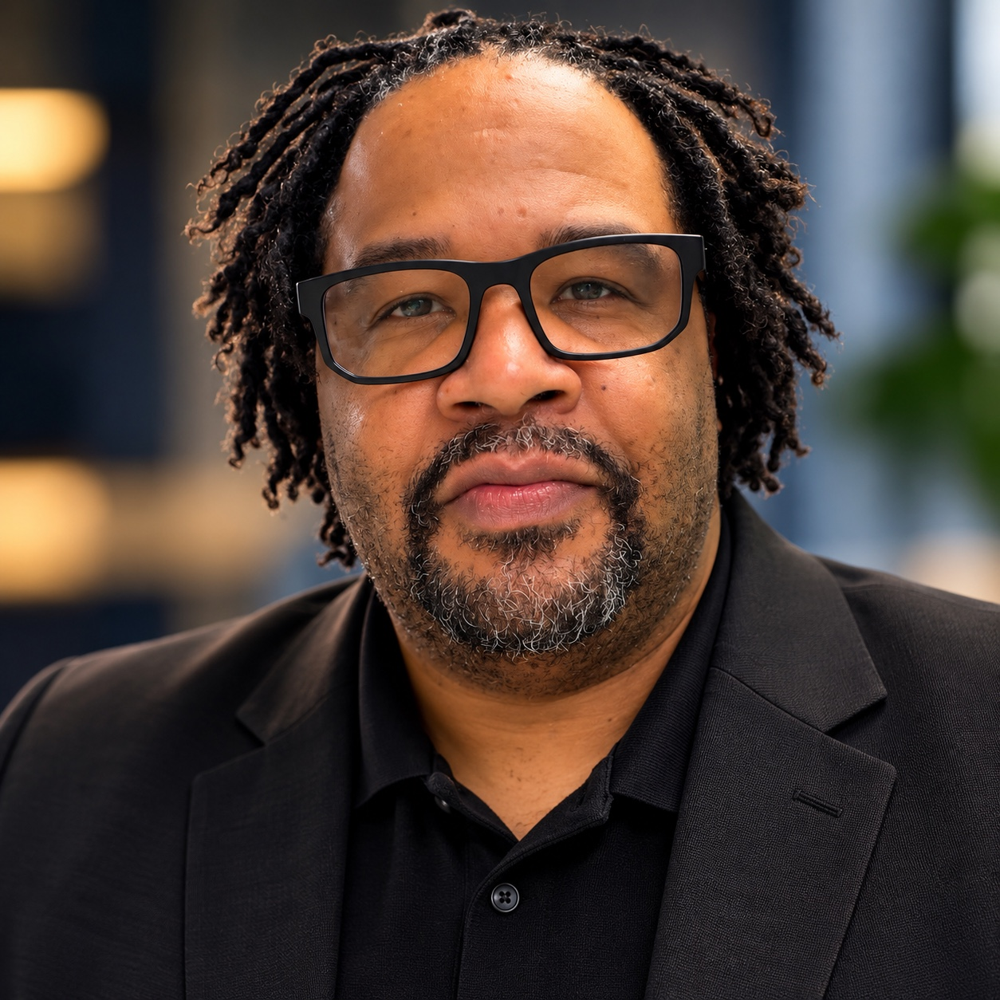
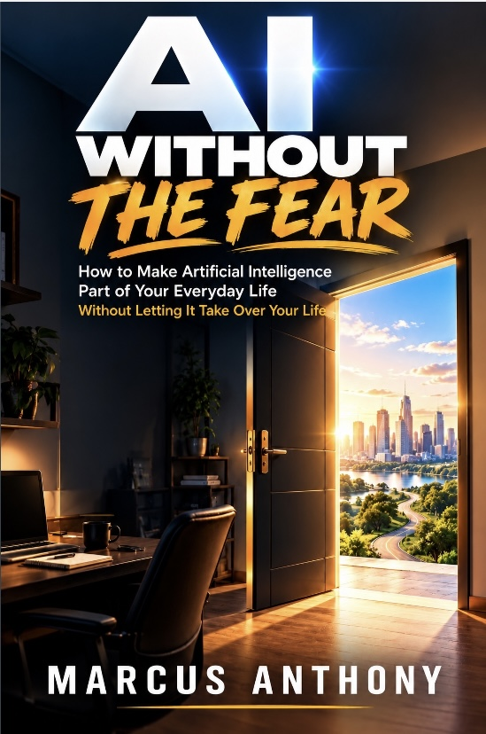

USE IT
Find practical ways AI can help with everyday life.
Author • Creator • Entrepreneur
I'm not an AI guru. And that's kind of the point.I'm a regular person who started using AI to solve problems, create things, develop ideas, and get more done. Now I'm sharing what I've learned along the way.


How to Make Artificial Intelligence Part of Your Everyday Life Without Letting It Take Over Your Life
AI is everywhere. But what are regular people actually supposed to do with it?
AI Without the Fear is a practical, funny, human guide to using artificial intelligence in everyday life without giving up your judgment, creativity, or control.
“AI can help you think. It cannot relieve you of the responsibility to think.”
Use it. Question it. Verify it. Always be the boss.
BUY ON AMAZONYou shouldn't need a computer science degree to understand artificial intelligence.
Marcus explores AI from the perspective of an everyday user — what works, what doesn't, what you should question, and how these tools can actually make life easier.
Find practical ways AI can help with everyday life.
Challenge answers instead of accepting everything.
Check important information using reliable independent sources.
Keep human judgment and decisions in control.
Writing is only one part of what I create.
Chicago sports, conversation, and the perspective of an everyday fan.
Sports give us plenty to talk about. The Bench Warmers brings an everyday fan's perspective to Chicago sports.
Explore the project ↗Music production, composition, film scoring, sound design, and audio post-production.
From an original composition to the sound of a scene, this is where music, storytelling, and audio meet.
Listen to the film-scoring & audio portfolioBuilding ideas, businesses, and brands, including M2 Audio Post and other creative ventures.
Turning an idea into something real is part of the work. M2 Audio Post is one of the creative ventures taking shape.
Explore the project ↗I'm Marcus Anthony — an author, creator, entrepreneur, husband, father, music producer, sports fan, and lifelong idea guy.
For years I've had ideas that never made it past the idea stage.
AI didn't suddenly make me smarter or more talented. What it did was help remove some of the friction between thinking about something and actually doing it.
AI Without the Fear is one of the results.
I'm still learning. I'm still experimenting. I'm still questioning the technology.
And I'm sharing what I learn with other regular people who are trying to figure this stuff out too.
“Fear doesn't get to make the decision anymore.”
Starting. Learning. Creating. Doing the things you've talked yourself out of. You don't have to have it all figured out to take the first step.
AI. Creativity. Entrepreneurship. Sports. Life.
I'm figuring a lot of this out in real time — and talking about what I learn along the way.